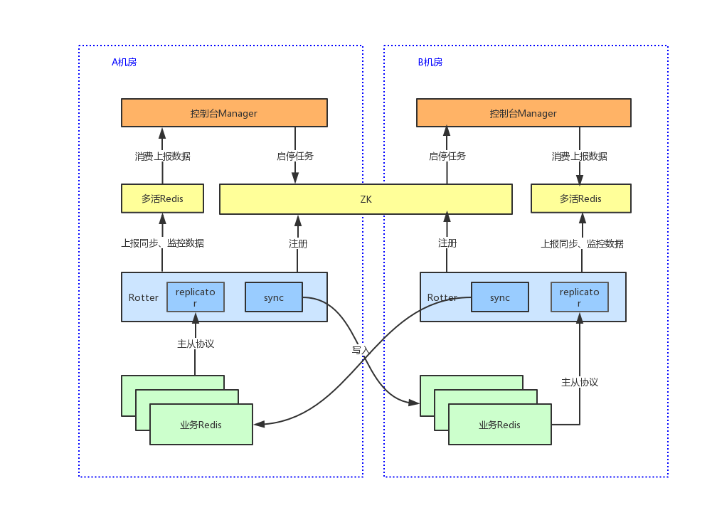
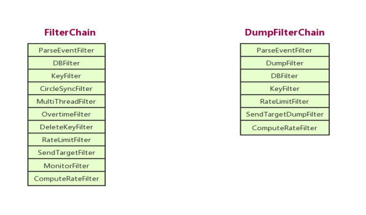
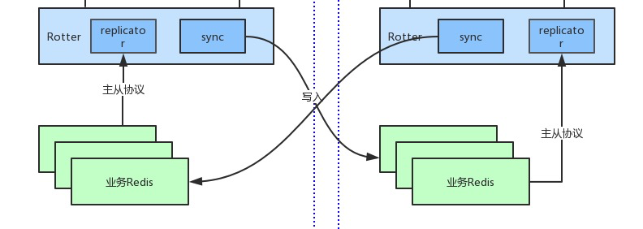
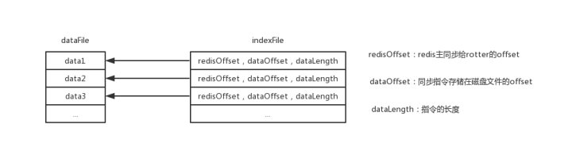
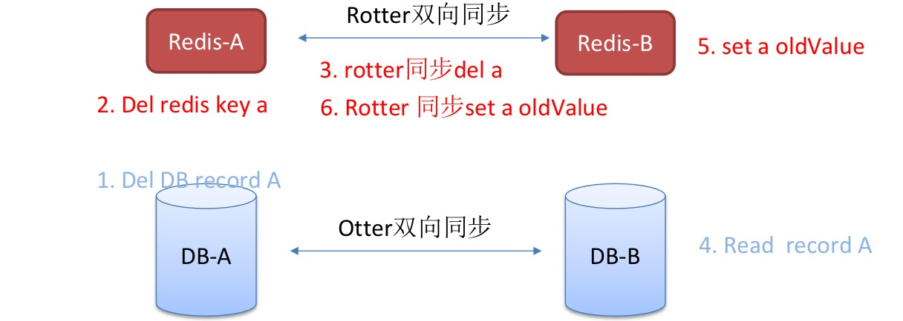

禧云信息/研发中心/杨海波 20191115
关键词：Rotter，Redis，多活，跨机房，同步
一、项目介绍
Rotter是禧云自主研发的跨机房Redis双向同步解决方案（下文简称为方案），具有零侵入、高吞吐量、低延时、高堆积能力等特点。当前版本支持Sentinel模式和单点模式Redis架构。从2019年Q2上线至今，服务于三个独立业务线，线上运行稳定，同步延时基本在50ms以内。
1.1 系统架构
整个Redis跨机房双向同步系统分为三层：
- 控制台Manager
- 节点发现和数据传输层（ZK+Redis）
- 数据同步层Rotter
系统架构如图1-1

图1-1
其中，
- Manager负责任务配置、数据展示、监控报警等，各机房独立部署；
- ZK为跨机房集群，A机房为Leader节点，B机房为Follow节点。ZK在方案中负责Rotter节点的注册发现和任务调度。
- 多活Redis在方案中扮演数据队列的角色，降低了Manager和Rotter节点之间的耦合度。
- Rotter是Redis同步任务的执行者，包含replicator和sync两个角色。
- replicator是国人开源的基于java语言的redis主从协议实现者redis-replicator，负责解析redis节点指令。
- sync负责redis指令跨机房写入，处理同步回环，同步指令监控等。
1.2 同步流程
Rotter中采用链式处理同步数据，任何一个Filter返回失败，该指令将不会同步。链式流程如图1-2

图1-2
- ParseEventFilter：格式化同步指令；生成指令回环校验key；赋值指令所属DB；过滤Rotter自身产生的指令
- DBFilter：过滤掉不需要同步的DB
- KeyFilter：过滤掉不需要同步的KEY
- CircleSyncFilter：过滤掉回环指令和删除保护指令
- MultiThreadFilter：多线程分发，提高同步效率
- OvertimeFilter：经过队列积压，判断该指令是否已经过期
- DeleteKeyFilter：生成删除保护KEY
- RateLimitFilter：限流，包括带宽和指令数
- SendTargetFilter：执行目标redis写入
- MonitorFilter：监控和上报正在同步的指令
- ComputeRateFilter：计算同步速率、带宽、队列积压长度等
二、背景&目标
2.1 背景
异地多活系统自2018年Q2上线以来，各核心业务系统都已陆续接入异地双活架构。异地多活已经成为我司保障服务高可用的常规武器。在我司的异地双活解决方案中，首先通过动态域名和阿里云全局流量管理服务达到用户流量的初步划分，然后在Nginx层根据流量规则对用户流量精准转发，确保同一个用户的请求能够稳定地请求到同一个机房，从而保证两个机房不会同时修改同一份数据。
即便如此，可靠的跨机房的数据同步仍然是双活方案最基本要求。多活业务依赖非多活业务数据或者流量调度时都依赖数据同步服务。MySQL层的数据同步是通过阿里巴巴开源的otter完成的，Redis的跨机房双向数据同步业内缺少合适解决方案。
没有Redis双向同步，往往需要牺牲业务的时效性，或者业务系统需要写一些额外的代码来处理缓存数据缺失的情况；另外，用户会话数据需要落到MySQL中来确保流量调度时用户无感知。
2.2 目标
基于背景部分阐述，我们可以知道，我司的跨机房Redis同步方案是跨机房异地多活方案的一个延伸，最根本的诉求就是让我司的业务不会因为接入多活系统受到限制，让我们工程师可以像实现单机房业务一样实现多机房业务。
所以，在项目启动之初就定下以下目标：
- 零侵入：业务系统不需要做任何改造就能接入
- 高吞吐量：基于现有业务峰值TPS乘以10，得出TPS要达到1万
- 低延时：我司的多活业务不会出现跨机房读取数据的情况，所以定的目标延时低于1s。实际情况延时在50ms左右
- 高堆积能力：基于跨机房网络的不确定性，当网络闪断时能够保证指令不丢失
- 高可用性：当网络故障或者Redis宕机恢复时，同步任务能自动恢复
- 可配置性：业务系统可以自由定制需要同步哪些Key
三、技术选型
要达到一条Redis指令写入两个机房的Redis节点，可以从client端、代理层、server端三个层面分别实现。
先说client端解决方案面临的问题：
- 我们需要提供一套统一的工具包，为每个指令提供一个是否需要同步到另一机房的参数；
- 我们可能还需要为工具包提供同步写另一机房还是异步写另一机房的参数；
- 写另一机房失败本机房数据是否需要回滚？
- 现在java业务系统使用jedis和redisson都有，适配难度大，且不利于客户端版本升级
所以，客户端侧解决方案被第一个否决了。
再来看代理层解决方案会面临哪些问题：
- 代理的性能怎么样，代理本身的延时高不高？
- 我司现有Redis架构基本都是Sentinel模式的，代理层解决方案每接入一个同步任务就需要重新调整Redis架构和网络，对运维同学不太友好
- 代理层解决方案同样面临同步写其他机房还是异步写其他机房，写其他机房失败怎么处理的问题。
- 开源界的Redis代理项目基本都不是基于java语言的，对于我们团队来说二次开发的难度较大。
代理层解决方案应该能解决我们的问题，但也不是特别理想。
接下来看看如果我们从服务端侧解决，会面临哪些问题：
- 我们需要解析到客户端的指令
- 需要解决同步回环问题：A -> B -> A
解决掉这两个问题，一个Redis指令写入两个机房的基本上就解决了。所以我们选择了从server端同步来实现。Redis主从协议的实现采用的国人开源的redis-replicator；回环同步问题下文中会详细讲到。
四、实现细节
本节会详细介绍一些具体问题的解决方案。
4.1 网络架构
我司在网络层用双机房双向VPN隧道打通局域网，北京到上海的网络延时稳定在30ms左右。这样我们的Redis节点就不需要暴露在公网，数据安全这块就不需要考虑了。
4.2 同步回环
同步回环是指同一条指令在两个Redis节点重复执行，看系统架构图的下面一截：图4-2

图4-2
如果不对同步指令加任何干预，业务写的一条指令会在A、B两个机房的Redis节点上无限循环执行：
- 业务系统在A机房redis-A写入指令 set a 1
- A机房replicator-A作为redis-A的从节点接收到指令set a 1
- rotter-A将指令set a 1写入B机房redis-B
- B机房replicator-B作为redis-B的从节点接收到指令set a 1
- rotter-B将指令set a 1写入A机房redis-A …
为了打破这个循环，我们采用了增加一个辅助key的办法：
- 业务系统在A机房redis-A写入指令 set a 1
- A机房replicator-A作为redis-A的从节点接收到指令set a 1
- rotter-A MD5(set a 1) 得到circle-key-md5，拼装成指令setex circle-key-md5 120 1
- rotter-A将指令setex circle-key-md5 120 1和指令set a 1一起写入B机房redis-B
- B机房replicator-B作为redis-B的从节点接收到指令setex circle-key-md5 120 1 和set a 1
- rotter-B直接忽略circle-key指令
- rotter-B在本机房执行del circle-key-md5，如果成功说明是回环KEY，不需要同步至A机房
4.3 高吞吐量
要提高吞吐量我们首先需要知道性能瓶颈在哪。从上面处理回环同步的问题我们可以看到，同步流程中存在两处需要业务Redis交互：
- Rotter收到同步指令之后需要在本机房执行del circle-key-md5来判断当前指令是否为循环指令
- Rotter将同步指令和circle-key-md5写入另一机房Redis
这里我们有两个武器：多线程和Pipeline。
多线程：
引入多线程的同时会引入另外一个问题：如何保证指令的顺序性？
顺序性的保证在同步回环校验阶段和跨机房写入阶段略有不同。
同步回环阶段我们只要得到指令是否为回环指令就行，和各指令之间校验的顺序没关系，但需要保证在往下一环节发送的时候是有序的。所以我们是采用线程队列实现的。关键代码如下 ：
……
写目标机房阶段我们需要严格保证执行顺序，假如业务系统执行两条指令set a 1和del a，如果同步时执行顺序反了，会对业务系统产生不可预估的后果。但如果是两个不同的key，大部分场景下是可以交换执行顺序的。
所以我们自己实现了一个简单的有序线程池，对同步的key取hash后再取mod，mod值相同的指令放在同一线程执行，这样就保证了同一个key的执行顺序一定是有序的。同时我们还支持将指定的key分配到同一个线程执行，满足业务系统存在key之间相互依赖的场景。
Pipeline：
通过redis pipeline批量执行指令能够大量的减少Rotter和Redis的交互次数，但也会带来一个问题：不能将指令阻塞在pipeline中太久而增加同步延时，所以我们需要另外一个线程来触发提交pipeline数据，目前Rotter采取的策略是每100条或者10ms发送一次。
4.4 高堆积能力
由于跨机房网络的不确定性，网络隔离随时可能发生。为了保证同步指令不丢失，我们需要把指令写到磁盘文件中，等到网络恢复时再从磁盘队列读出来写到目标机房，
为了保证同步效率，我们这里使用的是磁盘和内存混合队列MixBlockingQueue
……
下面我们再来看看磁盘队列是怎么实现的
磁盘队列包含两个文件：数据文件和索引文件。数据结构如图4-4

图4-4
其中索引文件是定长的18字节：
- redisOffset（8字节）：存储每条同步指令在复制积压缓冲区的offset，每次重新启动同步任务时可以通过二分查找确定是否需要从磁盘中继续读取指令。
- dataOffset（8字节）：存储指定在磁盘文件中的位置
- dataLength（2字节）：存储当前指令的长度
由于索引文件中数据长度为2字节，所以单条指令长度最大值为32kb，超过此大小则会丢弃这条指令
五、其他问题
5.1 Rotter连接业务Redis时造成Redis全量dump而影响业务系统
背景知识一：复制积压缓冲区
复制积压缓冲区是一个保存在主节点的一个固定长度的先进先出的队列，默认大小 1MB。 这个队列在 slave 连接时创建。这时主节点响应写命令时，不但会把命令发送给从节点，也会写入复制缓冲区。他的作用就是用于部分复制和复制命令丢失的数据补救。通过 info replication 可以看到相关信息。
背景知识二：Redis主从同步协议
|
协议名
|
Redis版本
|
原理
|
问题
|
|
SYNC
|
2.8以下
|
每次都生成RDB文件，复制到slave节点
|
网络秒级抖动都会造成master bgsave，影响服务可用性
|
|
PSYNC
|
2.8及以上
|
引入复制积压缓冲区，当redis复制中断后，slave上报原master runid + 当前已同步master的offset会尝试批量同步
|
redis slave重启或者 redis master发生故障切换，slave需进行全量重同步。
|
|
PSYNC2
|
4.0及以上
|
用master_replid1(当前主从复制ID)和master_replid2（上一次主从复制ID）取代了runid，故障切换后master_replid2替换为master_replid1。
|
|
背景知识三：Redis全量同步流程
- slave发送Replication ID, offset到master
- master开启一个进程执行bgsave，生成RDB文件。在此期间所有新的指令都会缓存到当前slave的输出缓冲区中
- master把RDB文件发送到slave
- slave把RDB文件加载到内存
- master把输出缓冲区中的指令增量同步到slave
在这个过程中，如果Redis存储数据量过大，会导致生成RDB文件大，对磁盘IO的压力会非常大，一旦磁盘IO打满会导致Redis进入假死状态，进程没挂，客户端拿不到连接。
我们的解决方案有两点：
- 优先连接Redis从节点，减少bgsave对业务的影响
- 配置同步任务时可以选择是否忽略全量dump，当忽略全量dump时，Rotter会通过redis info命令拿到复制积压缓冲区的offset，从最新的位置开始增量同步。
5.2 如何防止Rotter同步反向污染源Redis数据
Redis数据同步和MySQL数据同步是相互独立的，当MySQL同步延时较大时可能会出现Redis数据反向污染的情况。案例如下：

图5-2
如图5-2流程所示，Rotter同步会造成业务系统原本已经A机房删掉了记录a又被同步到A机房Redis了。
为了解决这个问题，我们引入了删除保护的概念：一段时间（默认2分钟）内在A机房删除的数据不会从B机房同步到A机房。具体做法如下：
- 图5-2中第3步Rottor-A将del a指令同步到B机房之前，生成删除保护指令setex rotter:delete:a 120 1,将这两条指令都写入redis-B
- 图5-2中第6步Rotter-B同步指令set a oldValue先执行 exists rotter:delete:a，返回成功判定key a是刚被删除的，不会同步A机房
六、参考资料
- redis-replicator：https://github.com/leonchen83/redis-replicator/blob/master/README.zh_CN.md
- 阿里云全局流量管理：https://help.aliyun.com/document_detail/86630.html?spm=a2c4g.11174283.6.542.34a31beaf0wkhA
- Redis Pipeline：https://redis.io/topics/pipelining
- Redis主从同步：https://redis.io/topics/replication
其他参考资源：
1）异地双活的四个误区
-END-
欢迎关注公众号：老兵笔记